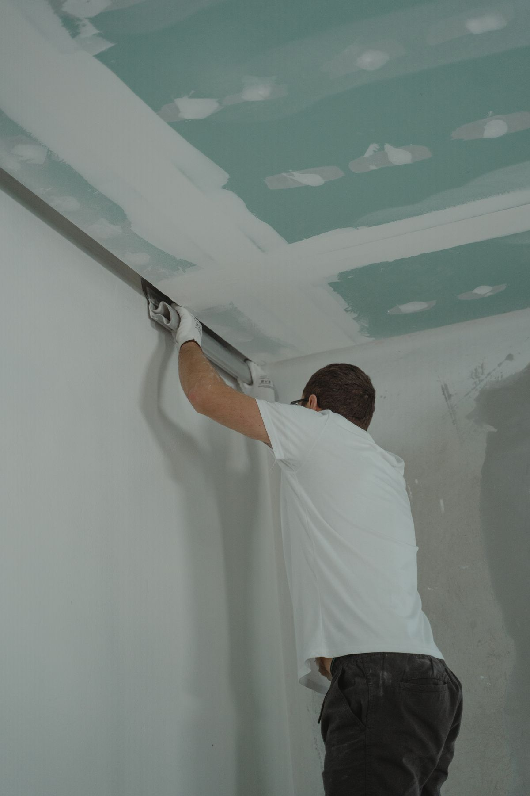
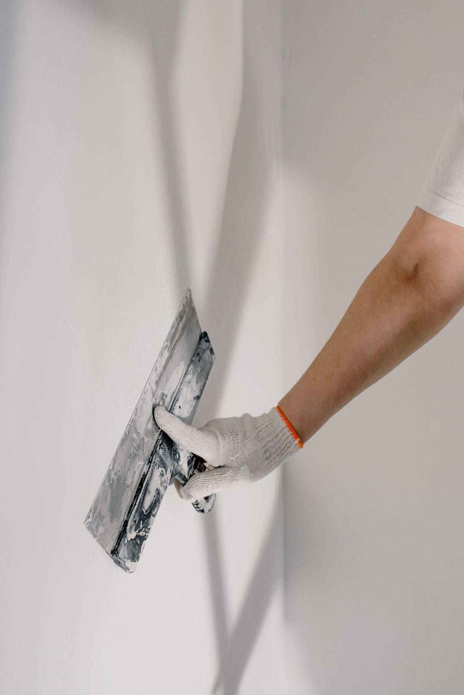
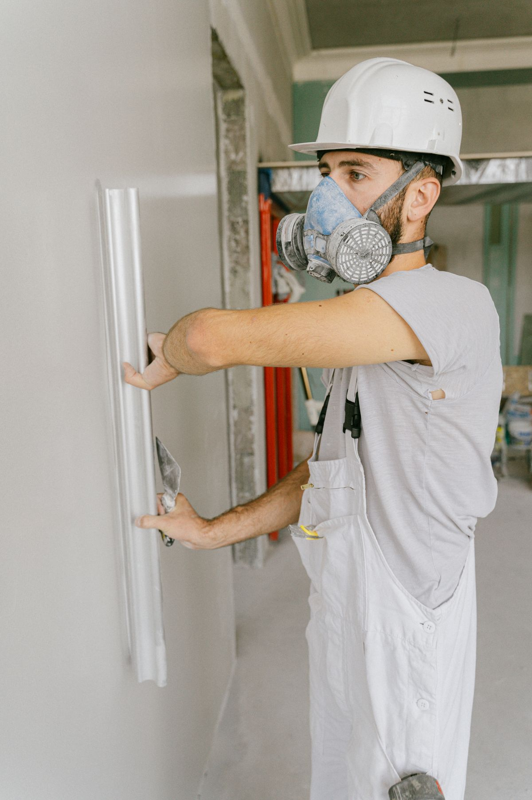
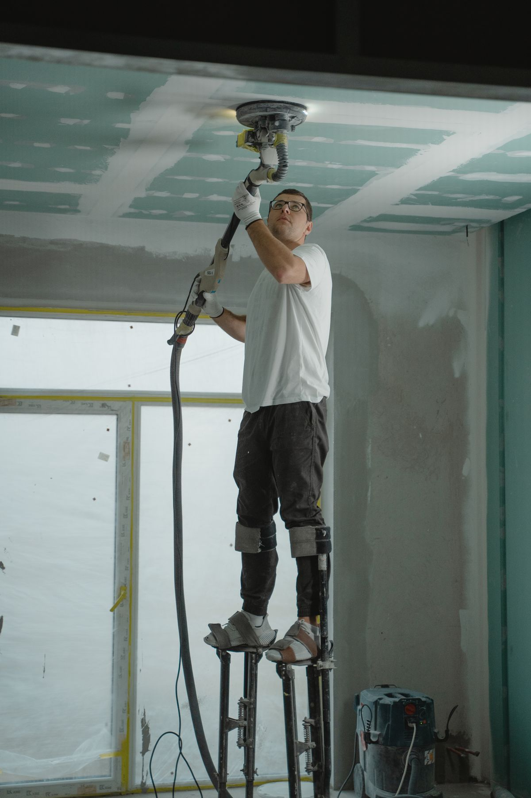
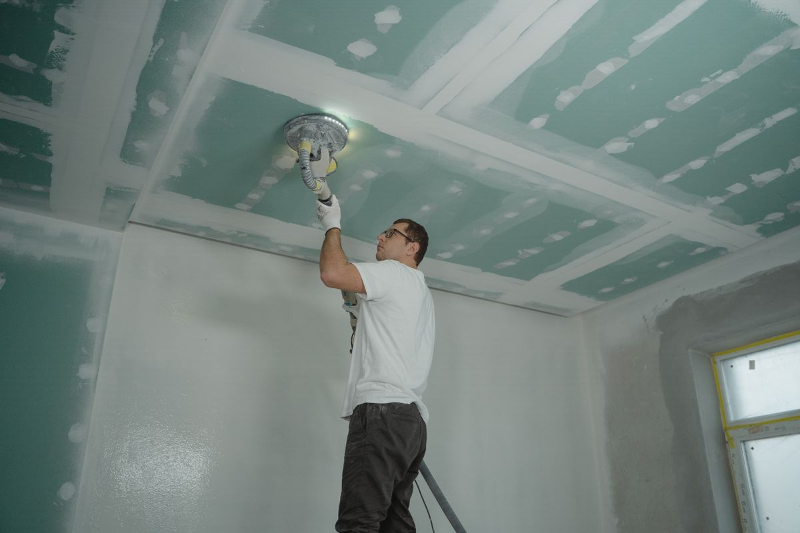
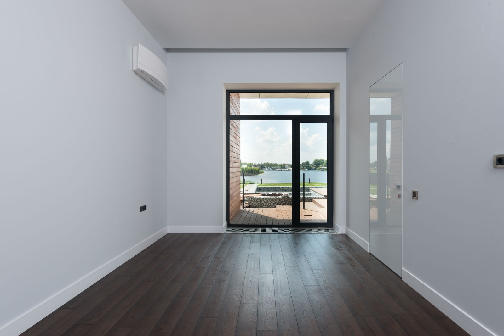

The work
Six stages, and only two of them are quick.
Hanging board is a day's labour. Making it disappear is the rest of the week. This is the sequence, in order, including the step most crews skip.
-
01
Before day one
Setting out
Deciding where the joints go before a single sheet is lifted. Joints kept off the corners of doors and windows, staggered between courses, and butt joints minimised — because a butt joint has no recess to hide the tape in and always takes more work.
-
02
Fast stage
Hanging
Board fixed to pattern, screws set just below the paper without breaking it. A screw driven too deep tears the face and loses its grip; one left proud shows as a bump through three coats of paint.
-
03
Sets the joint
Tape coat
Compound into the recess, tape bedded and squeezed down until no air is trapped behind it. Every bubble left here becomes a blister later, usually after the room is painted.
-
04
Slow stage
Fill and finish coats
Two more passes, each wider and thinner than the last, taken out to roughly ten inches either side. Feathering is the whole craft — the ridge is not removed, it is spread out until the eye cannot find its edge.
-
05
Slow stage
Sanding
Sanded back with the dust controlled, not shovelled through the rest of the house. Over-sanding is its own fault: cut into the paper face and the repair starts again.
-
06
The real inspection
The light check
A lamp held flat against the wall, raking down the plane, before anybody calls it finished. It finds every ridge, hollow and screw the room lighting was politely hiding. This is the step that gets skipped, and it is the reason a wall looks wrong once the furniture and the floor lamps arrive.
In progress
The stages, on site.






Ceilings
Ceilings are harder, and Florida makes them harder still.
Light crosses a ceiling at a shallower angle than it crosses a wall, so a ceiling shows a defect a wall would have hidden. Everything has to be flatter for the same result.
Then there is the local complication: a great many Central Florida ceilings are still carrying popcorn or knockdown texture applied decades ago. Taking that off and bringing the surface up to a smooth finish is a different job from finishing new board, and worth quoting as one.
- Smooth ceilings show everything.Which is exactly why people want them, and why they cost more than a textured one.
- Texture hides, until it does not.Knockdown and orange peel forgive a lot. They also date a room and are hard to patch invisibly.
- Ask about the level.A smooth ceiling under downlights is a Level 5 conversation, not a Level 4 one.
Confirm which of these the shop takes on before launch — this page describes the trade, not a quoted scope.
Next step
Get a quote that names its level.
Tell us the rooms, the lighting and what is going on the walls afterwards — that is what decides the finish you actually need.